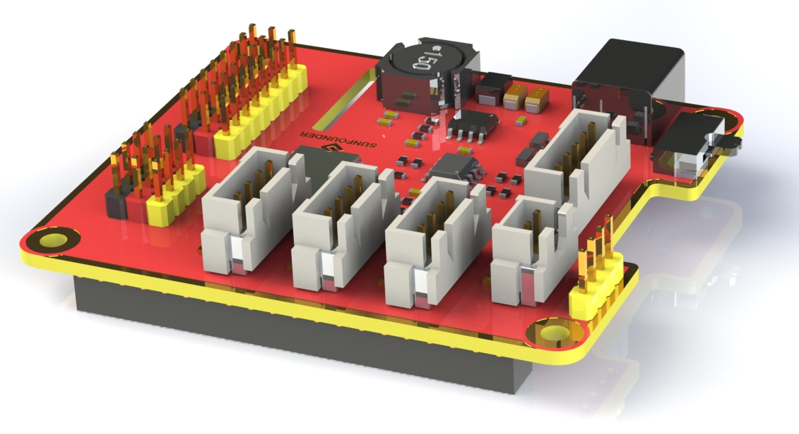
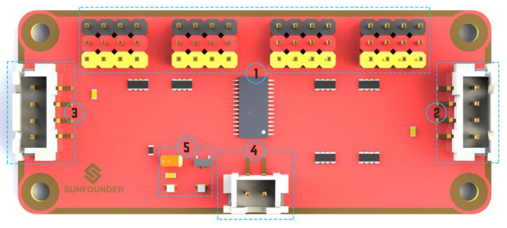

付録2：部品¶
ロボットHATS¶
{kind=link}
**ロボットHATS**は40ピンRaspberry Piに特別に設計されたHATであり、Raspberry PiモデルB +、世代2モデルB、世代3モデルB、世代3モデルB +、世代4モデルBで動作し、GPIOポートからRaspberry Piに電力を供給する。HATSのルールに基づいた理想的なダイオードの設計により、USBケーブルとDCポートの両方を介してRaspberry Piに電源を供給できるため、バッテリーの電力不足によってTFカードが損傷することを防ぐことができる。PCF8591はI2C通信とアドレス0x48を備えたADCチップとして使用される。

デジタルポート：3線式デジタルセンサーポート、信号電圧：3.3V、VCC電圧：3.3V。
アナログポート：3線4チャネル8ビットADCセンサーポート、基準電圧：3.3V、VCC電圧：3.3V。
I2Cポート：3.3V I2Cバスポート
5V電源出力：PWMドライバーへの5V電源出力。
UARTポート：4線UARTポートと5V VCCはUSBへのSunFounder FTDIシリアルと完全に連携する。
モーター制御ポート：モーター用5V、モーターMAとMBの方向制御、フローティングピンNC、SunFounderモータードライバーモジュールとの連携。
スイッチ：電源スイッチ
電源インジケータ：電圧を指示する-2つのインジケータが点灯：> 7.9V。1つのインジケーター：7.9V〜7.4V。インジケータ点灯なし：<7.4V。バッテリーを保護するために、インジケーターが点灯していない場合は、充電する際にこれを取り出してください。電源インジケータは単純なコンパレータ回路によって測定された電圧に依存する。負荷によっては検出電圧が通常より低下する場合があるので参考値としてご利用ください。
電源ポート：5.5/2.1mm標準DCポート、入力電圧：8.4〜7.4V（制限された動作電圧：12V〜6V）。
PCA9865¶

PCA9685 16チャネル12ビットI2CバスPWMドライバー。独立したPWM出力電力をサポートし、並列接続用の4線式I2Cポート、PWM出力用の区別された3色ポートをより簡単に利用できる。
{kind=link}
PWM出力ポート：3色ポート、独立したパワーPWM出力ポート、サーボへの直接接続。
2＆3. I2Cポート：4線式I2Cポートは並列で使用できる。3.3V/5.5Vに対応。
PWM電源入力：最大12V。
LED：チップとPWM電源入力用電源インジケータ。
モータードライバーモジュール¶
モータードライバーモジュールは低発熱の小型パッケージモータードライブである。

電源とモーター制御ポート：チップとモーターに電力を供給し、モーターの方向を制御するためのピンが含まれている。
モーターのPWM入力：2つのモーターの速度を調整するためのPWM信号入力。
モーター出力ポート：2つのモーターの出力ポート。
USBウェブカメラ¶

このカメラは120°の広角をサポートするため、広く鮮明な視界が得られて、PiCar-Vで使用するときのエクスペリエンスが向上する。
SunFounder SF006Cサーボ¶

クラッチギアデジタルサーボの内部にDCコアモーターが搭載されており、一定の負荷をかけた後、ステアリングギアの減速装置は自動的にクラッチを切り、損傷や通常の負荷から製品を保護する。
パフォーマンスの機能：
アイテム |
V = 4.8V |
V = 6.0V |
消費電流*（無負荷） |
≦50mA |
≦60mA |
ストール電流 |
≦550mA |
≦650mA |
定格トルク |
≥0.6 kgf·cm |
≥0.7 kgf·cm |
最大トルク |
≥1.4 kgf.cm |
≥1.6 kgf.cm |
負荷速度なし |
≦0.14sec/60° |
≦0.12sec/60° |
DCギアモーター¶

これは減速機付きのDCモーターである。以下のパラメーターを参照してください：